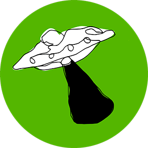

www.ufotutkimut.art
Pasi Palonen
ITE-taiteilija / podcast host / popkulttuurientusiasti
Taidekaupunki Mänttä–Vilppula
Lista saatavilla olevista teoksista
Taidetta ja mikrobloggaamista @ Instagram
Taidetta @ Tumblr
Lopunajan valokuvia @ Instagram
Katsomani elokuvat @ Letterboxd